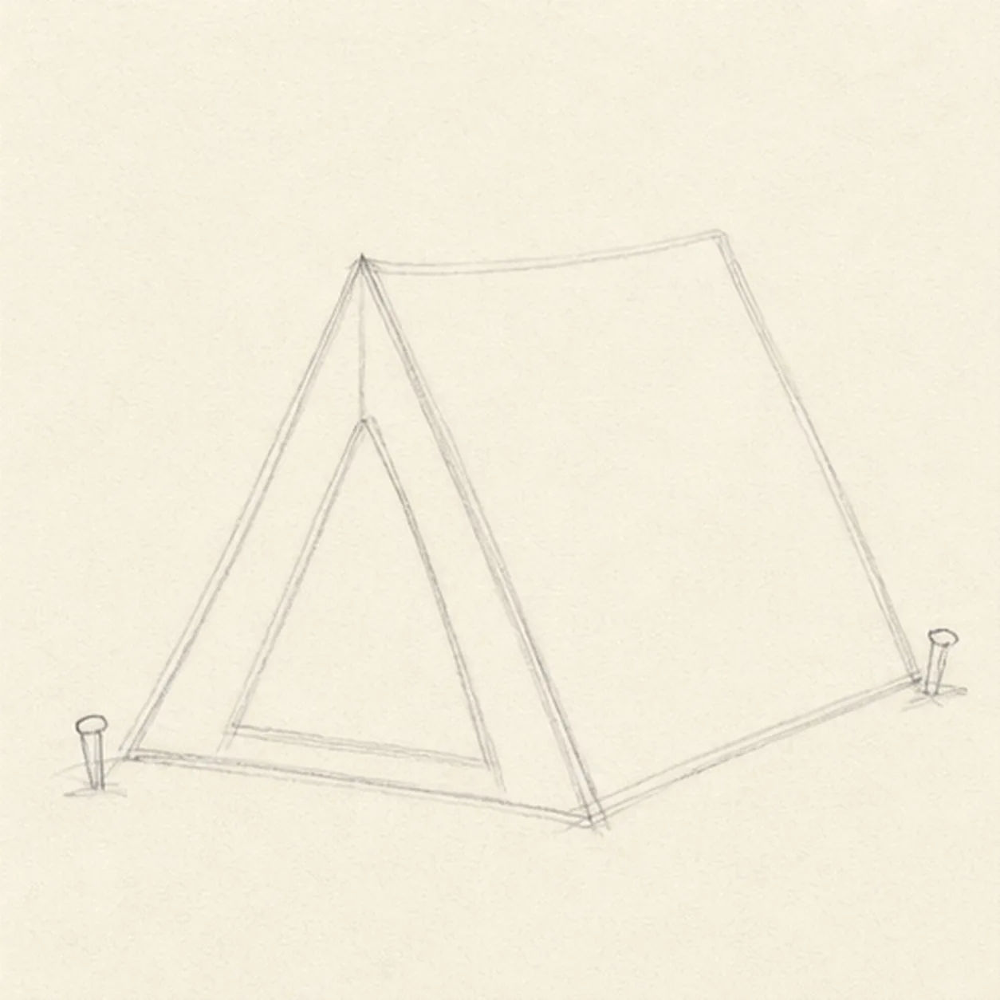
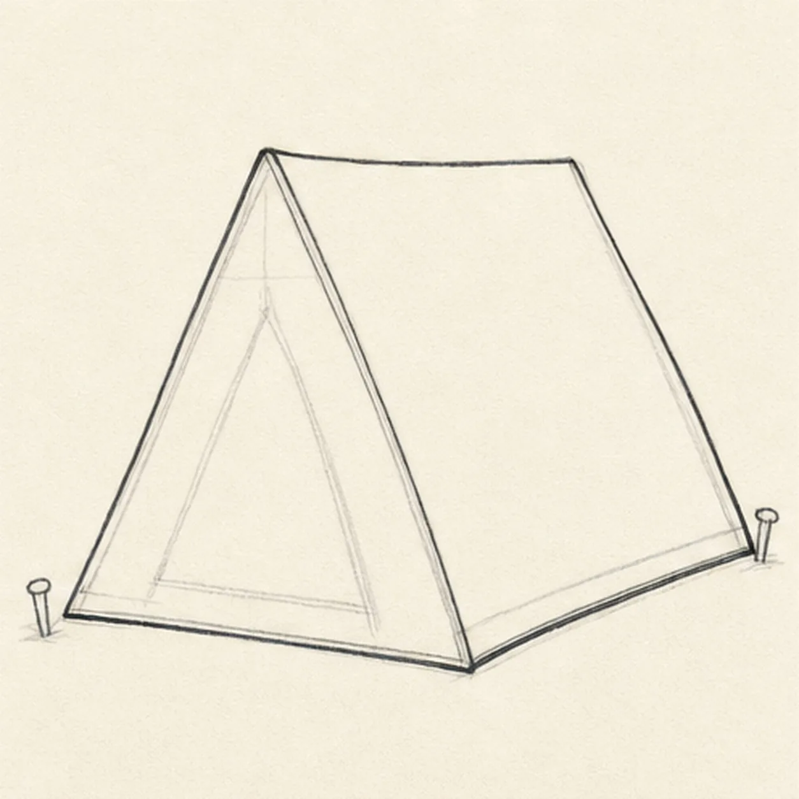
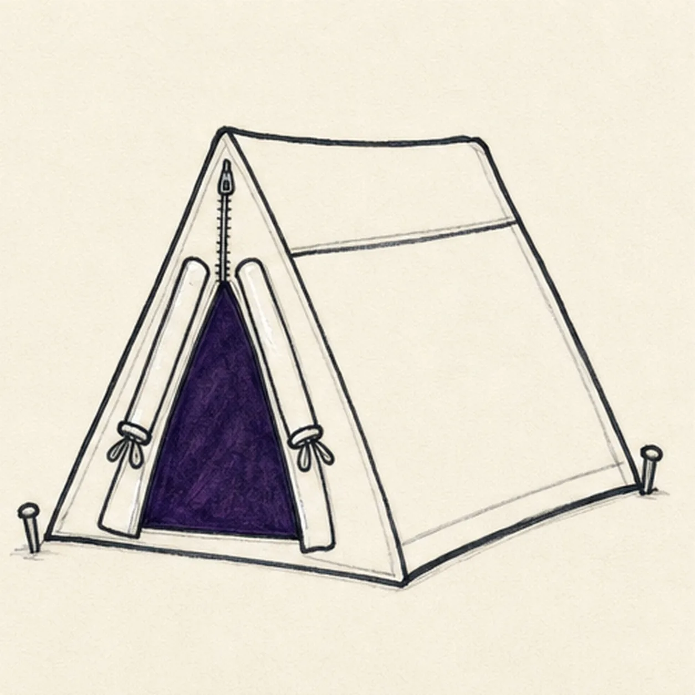
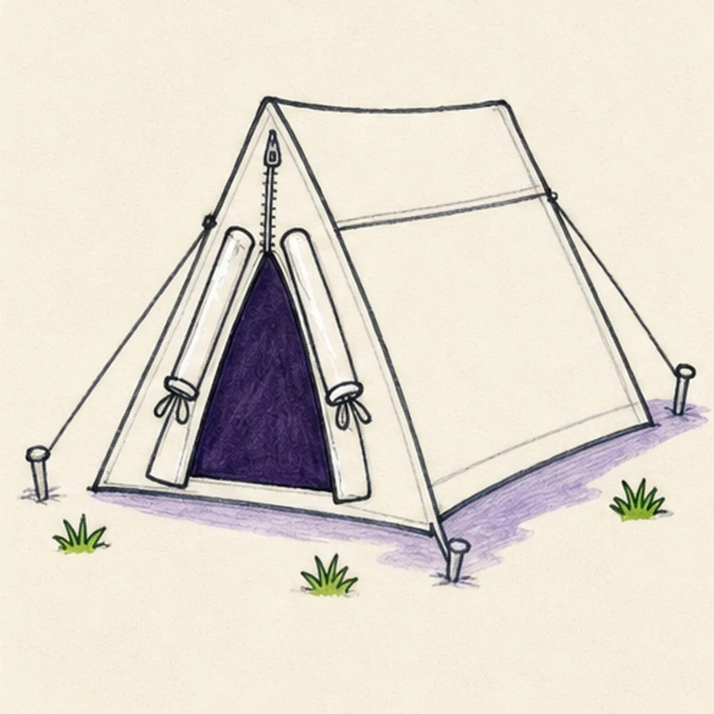
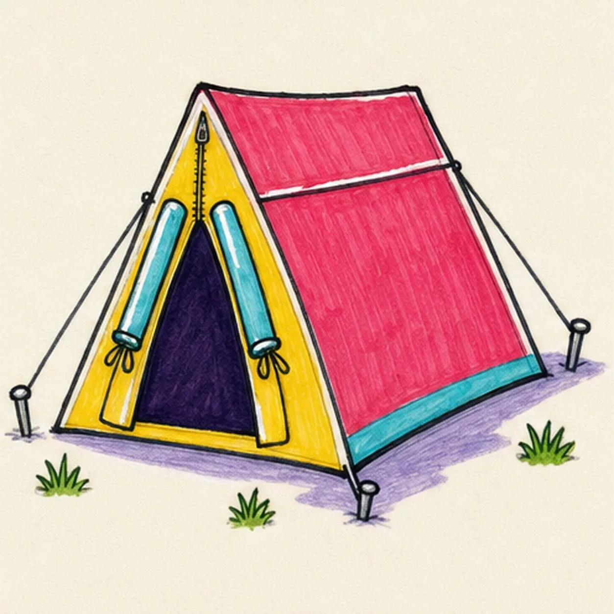

Felt-tip marker mode
Let's draw a camping tent
Treat this as one playful practice round: sketch the idea loosely, simplify the shapes, then commit with confident marker outlines and bright fills.
-
01

Pitch the tent guides
Draw a light front triangle, pull a center ridge into the visible side plane, add the ground line, reserve a large triangular doorway, and mark two outer guy-line stake positions.
Marker tip: Ghost the ridge before touching down and compare the doorway triangle with the paper around it. Keep that entrance footprint blank so you do not finish front-panel lines that the opening will cover.
-
02

Shape the A-frame tent
Wrap the guides with the triangular front, sloping roof, visible side wall, lower hem, and rear corner while preserving the same three-quarter view.
Marker tip: Rotate the page for the long roof edges and pull each in one confident stroke. Check the empty side-plane shape so the rear corner does not drift too wide.
-
03

Open the tent doorway
Add the dark open doorway inside the reserved area, draw two rolled flap edges with small ties, then place the roof-panel seam and front zipper line.
Marker tip: Draw the doorway first and break hidden front-panel lines cleanly at its edges. Keep both rolled flaps slightly different so the opening feels handmade instead of mirrored.
-
04

Stake down the campsite
Connect exactly two guy lines to two outer stakes, add one front-corner base peg, exactly three green grass tufts, and one pale-lavender ground shadow.
Marker tip: Aim each guy line directly from a tent corner to its stake and keep the front base peg separate. Pull the grass strokes upward in short clusters, then stop at three.
-
05

Ink and color the tent
Thicken every established contour, fill the roof and side wall raspberry, the front panel yellow, the flap edges and lower hem turquoise, and the doorway dark violet while preserving narrow paper highlights.
Marker tip: Pull the raspberry strokes down the roof slope and leave the highlight strip untouched. Let the bright panels dry before reinforcing the black ridge, zipper, and hem.
-
06

Brighten the campsite finish
Strengthen the keeper outlines and clarify the established tent silhouette, doorway, flap edges, roof seam, zipper, two guy lines, three stakes, three grass tufts, marker fills, highlights, and shadow.
Marker tip: Count two guy lines, three stakes, and three grass tufts, then stop. A face, camper, animal, fire, tree, mountain, moon, lettering, extra gear, sticker edge, or badge frame would crowd the clear tent form.